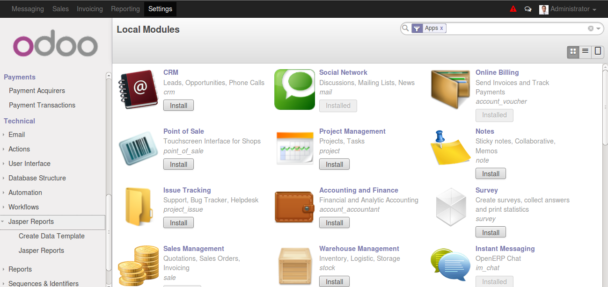
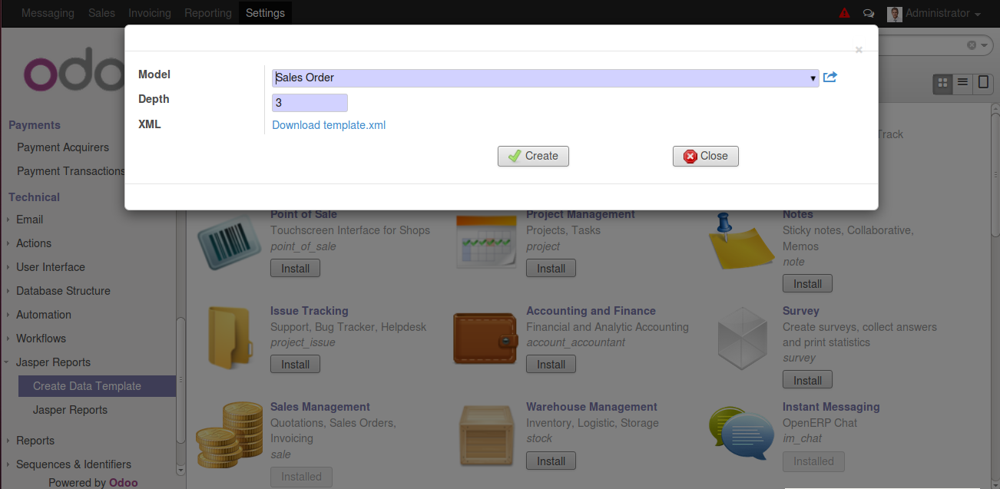
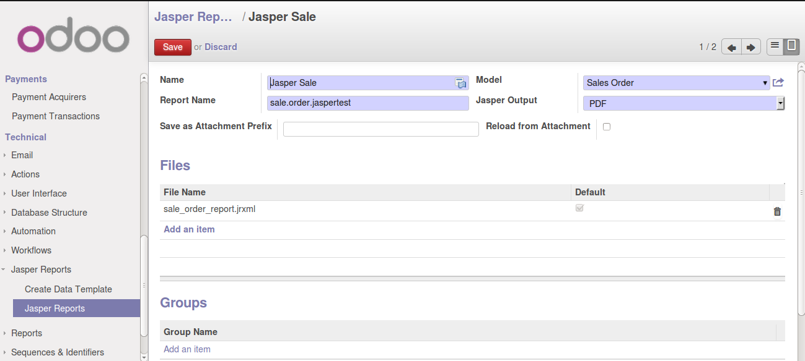
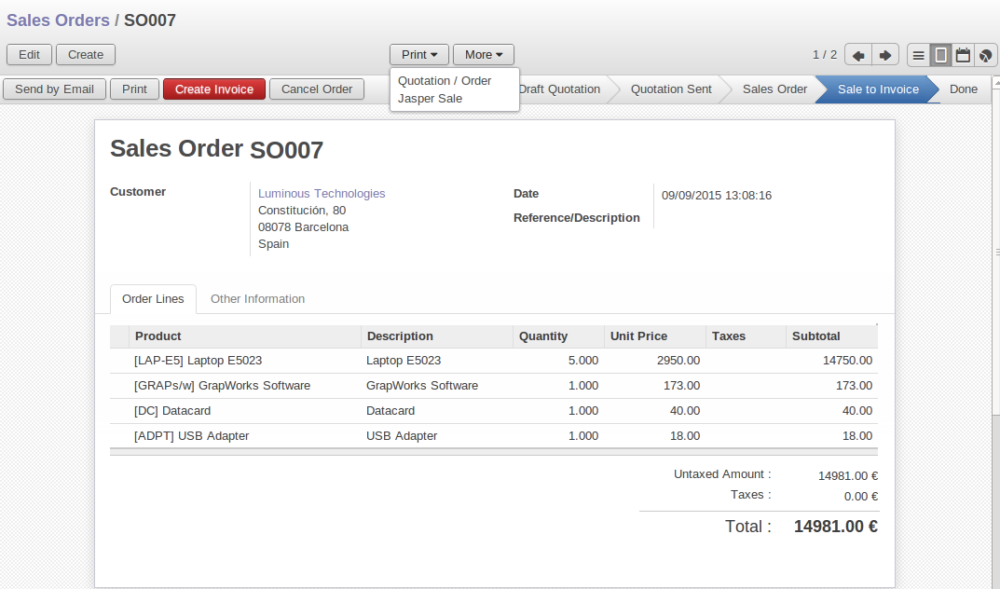
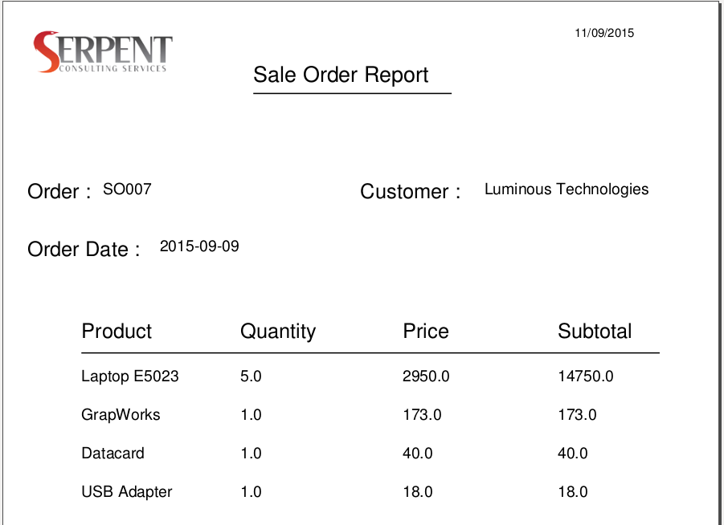

Jasper Report
This Module Gives The Features for creating Jasper Reports

Jasper Data Template
In your Odoo web interface, under the Technical section, jasper reports menu is there. Create a jasper reports data template file.

Create Jasper Report
Create a jasper reports for your module with your .jrxml file.

Demo report for sale order model : /Jasperv8/jasper_reports/custom_reports/sale_order_report.jrxml
Print Jasper Report

Example Of Jasper Report

Jasper Report with Multi Process
When use multi process (workers more than 2) with jasper reports in V8, you faces some errors like
" EXCEPTION: [Errno 111] Connection refused (111, 'Connection refused') " or
" Exception: bus.Bus unavailable ".
Solution:
At first install " psycogreen-1.0 " python library. And after that uninstall " im_chat " module from your database. It's successful worked with Multi process.